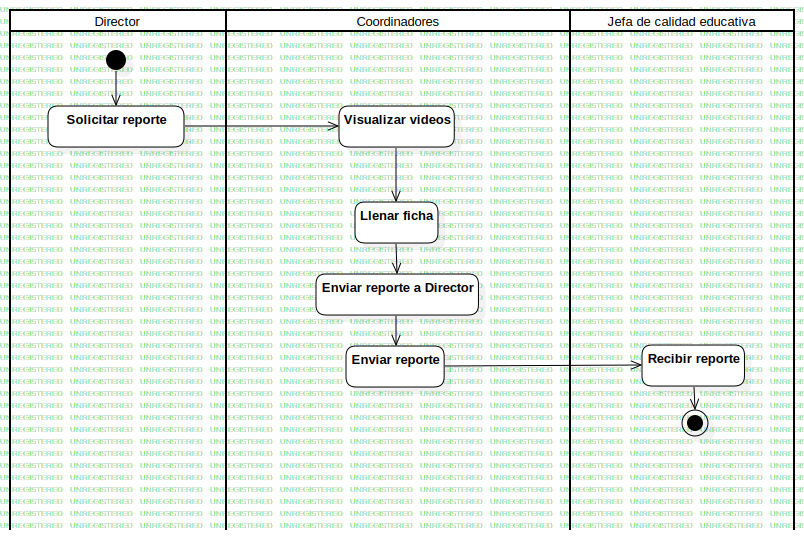

Activity1
UMLActivity
Untitled
::
«Business Analysis Model»2.MAN
::
Activity1
Description
none
Diagrams

ActivityDiagram1
Groups
Director
Coordinadores
Jefa de calidad educativa
Nodes
InitialNode1
Solicitar reporte
Llamar a docente e informar dictado de sus cursos
Dar preguntas
Enviar reporte a Director
Recibir reporte
ActivityFinalNode1
Edges
(InitialNode1→Solicitar reporte)
(Solicitar reporte→Visualizar videos)
(Visualizar videos→Llenar ficha)
(Llenar ficha→Llamar a docente e informar dictado de sus cursos)
(Llenar ficha→Enviar reporte a Director)
(Enviar reporte→ActivityFinalNode1)
(Enviar reporte→ActivityFinalNode2)
(Enviar reporte a Director→Enviar reporte)
(Enviar reporte→Recibir reporte)
(Recibir reporte→ActivityFinalNode1)
Properties
Name
Value
name
Activity1
stereotype
null
visibility
public
isReentrant
true
isReadOnly
false
isSingleExecution
false
Owned Elements
ActivityDiagram1